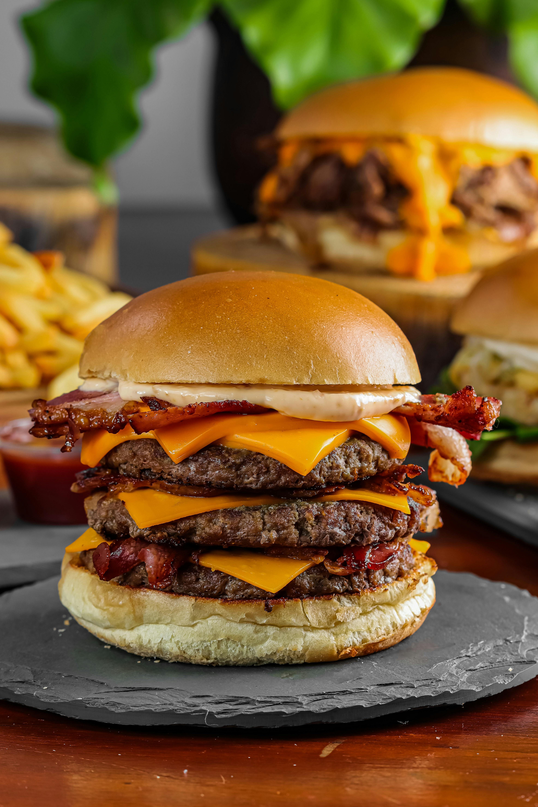

BURGER Recipes

home
DISH description:
A hamburger , often known as a burger, consists of fillings—usually a patty of ground meat, typically beef—placed inside a sliced bun, sesame seed bun, or bread roll. The patties are often served with lettuce, tomato, onion, pickles, bacon, or chilis. The filling of the burger can be topped with condiments such as ketchup, mustard, mayonnaise, relish or a "special sauce", often a variation of Thousand Island dressing. A burger with the patty topped with cheese is called a cheeseburger.[1] Under some definitions, a hamburger is considered a sandwich.
Hamburgers are typically associated with fast-food restaurants and diners but are also sold at other restaurants, including high-end establishments. There are many international and regional variations of hamburgers. Some of the largest multinational fast-food chains feature burgers as one of their core products: McDonald's Big Mac and Burger King's Whopper have become global icons of American culture.[2][3]
Ingredients :
- Ground beef: 1 pound (450 g) to 1.5 pounds (680 g), preferably 80/20 lean-to-fat ratio for juicines
- Buns: 4–6 soft hamburger buns, lightly toasted
- Cheese (optional): 4–8 slices of American, Cheddar, Swiss, or other preferred cheese
- Seasoning: Fine sea salt and freshly ground black pepper to taste
- Condiments: Ketchup, mustard, mayonnaise, relish, or a "special sauce" (e.g., Thousand Island or a blend of mayonnaise and barbecue sauce)
- Toppings: Lettuce, tomato slices, onion (raw or caramelized), pickles, bacon, or other preferred additions
-
Steps :
- Divide the ground beef into 4–6 equal portions and gently form them into balls using your hands
- ightly press each ball into a patty about ½ inch (1.3 cm) thick, ensuring it is 1 inch (2.5 cm) wider than the bun to account for shrinkage
- Use your thumb to create a small indentation in the center of each patty to prevent it from puffing up during cooking
- Preheat a skillet, griddle, or grill to medium-high heat (375°F / 190°C)
- Place the patties on the hot surface. Cook for 2–5 minutes per side, depending on desired doneness, without pressing down to retain juices
- For cheeseburgers, place a slice of cheese on top of each patty during the last 1–2 minutes of cooking and cover with a lid to melt.
- Use a meat thermometer to check internal temperature: 155°F (68°C) for medium, 165°F (74°C) for well-done
- Remove patties from heat and let them rest for 5 minutes to allow juices to redistribute
- Toast the buns cut-side down on the grill or in a skillet until golden brown
- Assemble the burger by spreading condiments on the bottom bun, adding the patty, then layering with lettuce, tomato, onion, pickles, and other toppings. Top with the bun lid